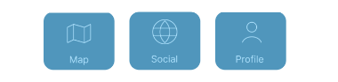

The Product
To keep the design as simple as possible, we have created 3 different views for the user, with different functions. We call these views - The Map View, The Social View and The Profile View.
Now, you might wonder, what are the different views? What do they do? And why are they helpful for me? Don’t you worry, we explain everything below, to get you started and easy understanding of Mate Rate.
The Map View
The map
With Mate Rate, it all comes down to the map. This is the place where all of your friend’s reviews are stored in one single place! You can explore the places your friends have visited and read more about them just by pressing on a friendly face.
Through the map, you can easily explore recommendations through a simple and easy overview of recommendations.
Display a review
By pressing on a recommendation, you can gather more specific information from your friend's review. It will include ratings from 1-5 from your friend regarding the price, food, service, including both an average rating from the specific friend and overall rating with these categories combined. Furthermore you will be able to see a comment with more specific information and tags to help you grasp the place.
An easy layout with not too much information, displaying only the necessary things you need to know for digging into the details of a recommendation of a place. This all to help you really grasp and understand the vibe and content of the place.
Filters
ADD VIDEO OF FILTERS
Through the filter, you can choose to filter out what is shown on the map based on friends, types or areas. If you are looking for something specific, you know that there is one friend that always has great burger recommendations, or if you are not interested in a particular type of place, you can always just use the filter function to find this out!
The filter helps you to not get overwhelmed with information and to make sure you get recommendations matched to your individual specific preference.
Add review
You can either add a location through 1) searching for a place, 2) get location on the map or 3) import it from social media. After selecting your place, just rate your experience based on categories, add a small comment, choose a fun icon and tags relatable to your recommendation. You can also add a picture, since one is always “eating with the eye”.
Are you bored and don’t have the time and energy to write long reviews? Don’t worry, you don’t have to do that at Mate Rate, we got you covered in an easy and simple way! We have made it simple using our 3 selections for adding a review, and a simple and fun interface with only ratings, a small comment, tags and emojis to keep it simple and fun! We usually say that it is Easy peasy lemon squeezy!
Request review
If you are not quite finding what you are looking for on the map, you can always send a request to a friend. You can specify what type of place you are looking for, who you want to send the review to, and then write a message about what you are looking for.
Get in touch with your friends in a short and easy way, and request reviews based on your preferences to match your individual specific mood for the day! Maybe you have a friend who has a killer restaurant for your craving for pizza? Then just send out a request to that person!
The Social View
This is where you find the recommendation feed, respond to requests, send out invitations and connect/add new friends!
Recommendation feed
Stay updated with the latest information from your friends in an easy way through scrolling and easy to explore with the recommendation.
Fun and easy way to stay updated with recent reviews. And if the map is not the way for you to explore, maybe the feed will be more appealing to find your restaurant!
Responding to requests
Here you will find requests from your friend so you can help them out with a review. You can respond to the requests by new reviews or already created ones!
A simple way to stay interactive with your friends and share your awesome tips with one another, because sharing is caring!
Invitations
Invite your friends to dinner using the invitation function! Have you seen a recommendation you like and want to try? Then you should send an invite to your friends for you to explore together!
We help you explore restaurants together with friends, make the application more interactive with the feeling of a community, because life is better together!
The Profile View
Saved recommendations
Where do all your liked recommendations end up? Look no further! If you ever find a recommendation you enjoy and might want to visit yourself one day, you can always save it to your profile for safe keeping.
Can’t remember the place your friend recommended, fear no more! Never risk losing your good recommendation ever again! You can just save it and find it here! This enables you to easily store the restaurants you might want to explore, or recommendations you just like from your friends. Fear no more, never risk losing your good recommendations ever again!
Your own recommendations
When you have created a review, this is where it appears! If you have a new experience at the restaurant, just go here and edit the review to let your friends know the latest details about your favorite places!
An easy way to store your own pearls of restaurant that you want to share with friends, or want to go back to, so that you never forget them!
The Technology
The app is built with React Native, making it available for both iOS and Android with only one codebase. We used a serverless backend with Firebase, enabling user authentication and data storage without having to build a new backend server. The map view is generated with help of Google’s Maps API.